Friends Don't Let Friends Make Bad Graphs
Contributors
| Author(s) |
|
| Editor(s) |
|
Friends Don’t Let Friends Make Bad Graphs
This is an opinionated essay about good and bad practices in data visualization.
This material is MIT licensed and adapted from cxli233/FriendsDontLetFriends.
R Code for generating the graphs is available in that repository.
Speaker Notes
- This is an opinionated essay about good and bad practices in data visualization.
- This material is MIT licensed and adapted from cxli233’s work
- Please see the linked repository for the source for each of these graphs as well as more links and details.
1. Friends Don’t Let Friends Make Bar Plots for Means Separation
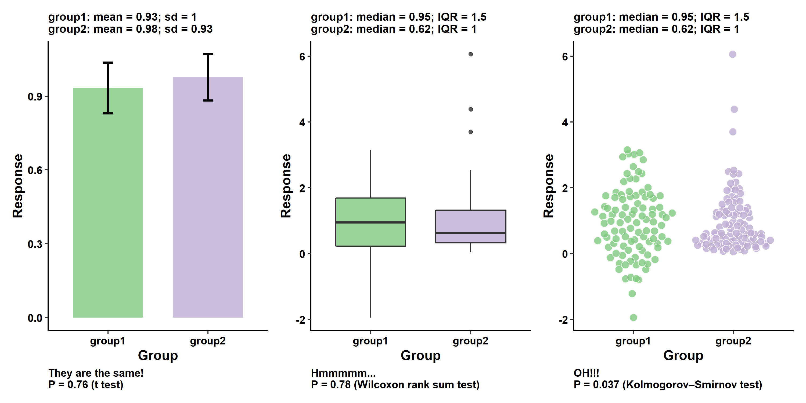
.footnote[inspired by many tweets the author saw on limitations of the bar graph. See e.g. Weissgerber et al. 2015]
Speaker Notes
- This has to be the first one.
- Means separation plots are some of the most common in scientific publications.
- We have two or more groups, which contains multiple observations; they may have different means, variances, and distributions.
- The task of the visualization is to show the means and the spread (dispersion) of the data.
- In this example, two groups have similar means and standard deviations, but quite different distributions.
- Are they really “the same”?
- Just don’t use bar plot for means separation, or at least check a couple things before settling down on a bar plot.
- It’s worth mentioning that I was inspired by many researchers who have tweeted on the limitation of bar graphs.
2. Friends Don’t Let Friends Make Violin Plots for Small Sample Sizes
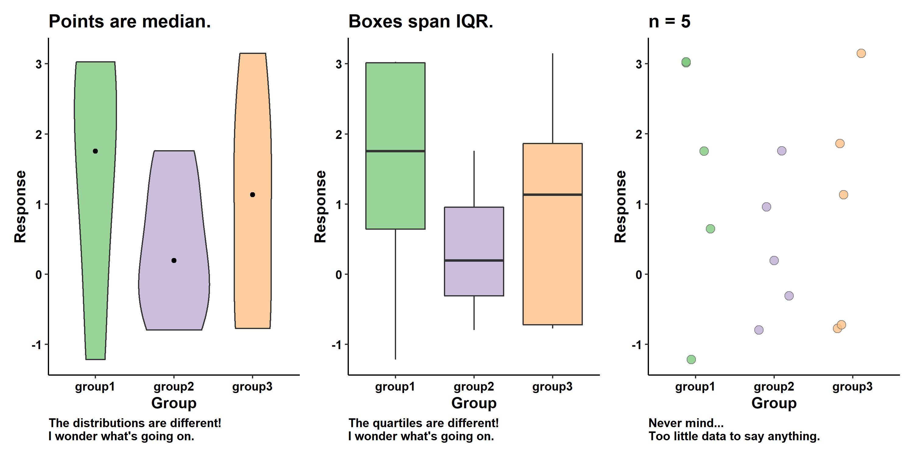
Speaker Notes
- This is quite common in the literature as well, but unfortunately, violin plots (or any sort of smoothed distribution curves) make no sense for small n.
- Distributions and quartiles can vary widely with small n, even if the underlying observations are similar.
- Distribution and quartiles are only meaningful with large n.
- I did an experiment before, where I sampled the same normal distribution several times and computed the quartiles for each sample.
- The quartiles only stablize when n gets larger than 50.
3. Friends Don’t Let Friends Use Bidirectional Color Scales for Unidirectional Data
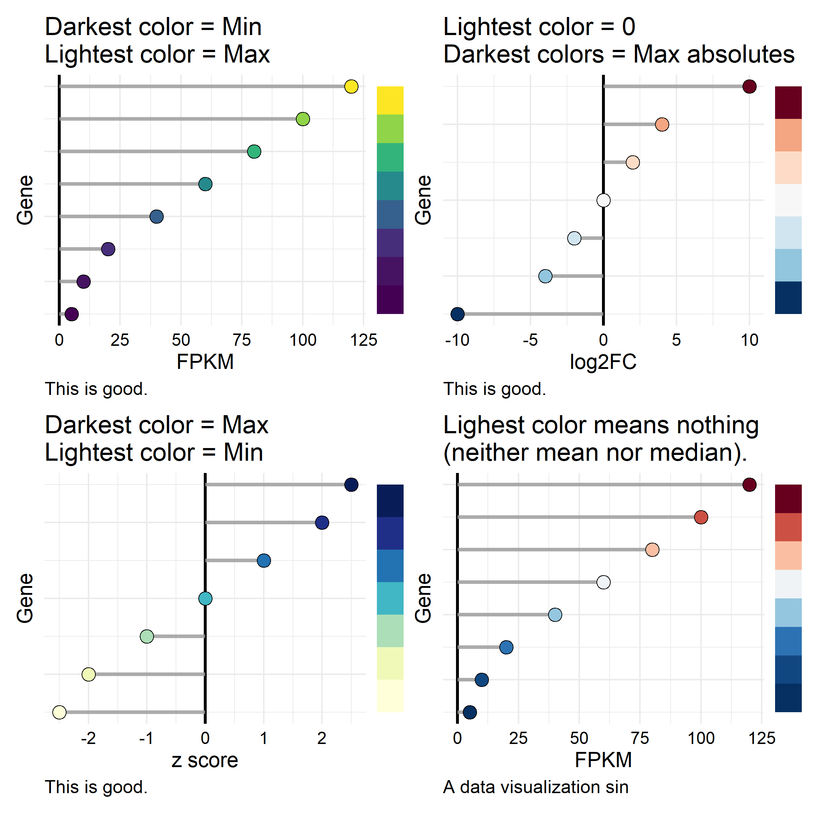
Speaker Notes
- Excuse my language, but this is a truly data visualization sin, and again quite common.
- I can understand why this error is common, because it appears that many of us have not spent a lot of thoughts on this issue.
- Color scales are pretty, but we have to be extra careful.
- When color scales (or color gradients) are used to represent numerical data, the darkest and lightest colors should have special meanings.
- You can decide what those special meanings are: e.g., max, min, mean, zero. But they should represent something meaningful.
- A data visualization sin for heat maps/color gradients is when the lightest or darkers colors are some arbitrary numbers.
- This is as bad as the longest bar in a bar chart not being the largest value. Can you imagine that?
4. Friends Don’t Let Friends Make Bar Plot Meadow
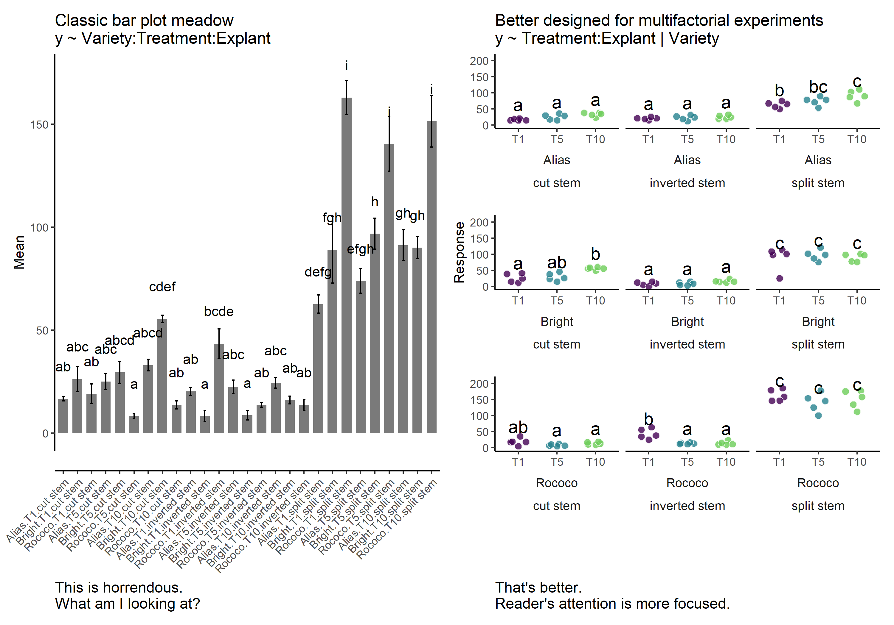
.footnote[Data from Matand et al. 2020]
Speaker Notes
- We talked about no bar charts for mean separation, but this is a different issue.
- It has to do with presenting results of a multi-factorial experiment.
- Bar plot meadows are very common in scientific publications and unfortunately also ineffective in communicating the results.
- Bar plot meadows are common because multi-factorial experiments are common.
- However, a bar plot meadow is poorly designed for its purpose.
- To communicate results of a multi-factorial experiment, it requires thoughtful designs regarding grouping/faceting by factors of interest.
- In this example, I focus on comparing the effect of
Treatment&ExplantonResponseat the level of eachVariety. - However, if the focus is the effect of
Treatment&VarietyonResponseat the level of eachExaplant, then it will require a different layout.
5. Friends Don’t Let Friends Make Heatmap without (Considering) Reordering Rows & Columns
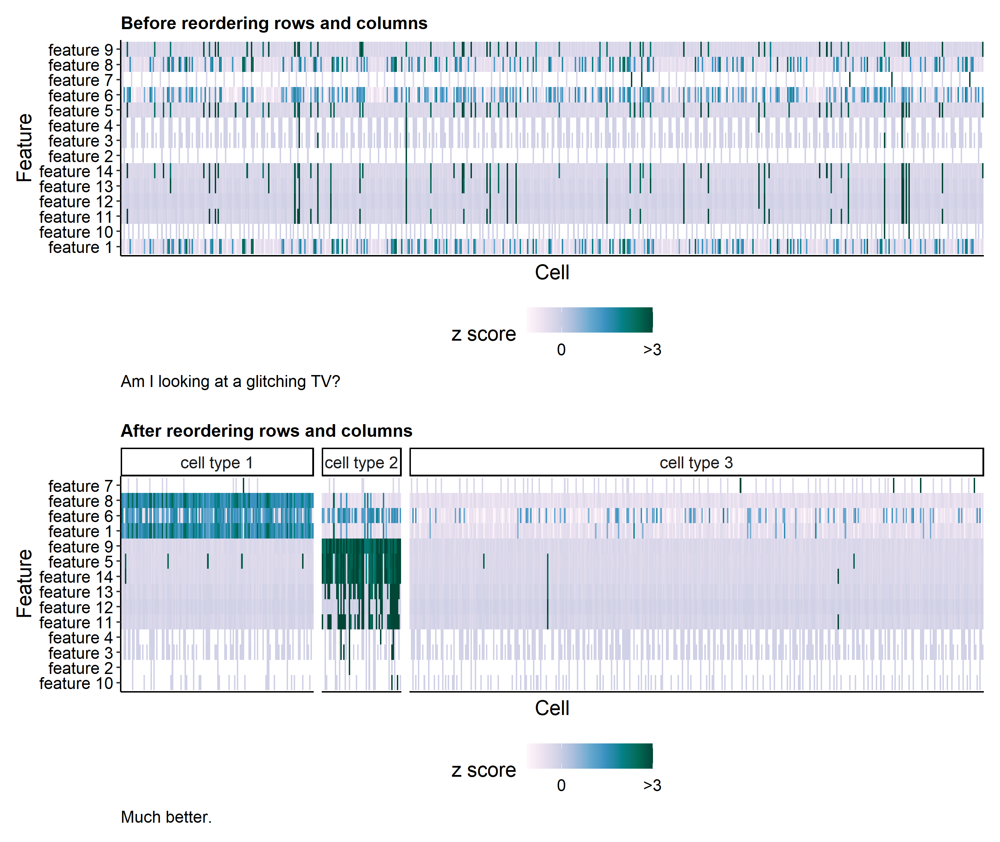
.footnote[Data from Li et al. 2022]
Speaker Notes
- Heatmaps are very common in scientific publications, and very very common in omics papers.
- However, for heatmaps to be effective, we have to consider the ordering of rows and columns.
- In this example, I have cells as columns and features as rows. Grids are showing z scores.
- It is impossible to get anything useful out of the heatmap without reordering rows and columns.
- We can reorder rows and columns using clustering, but that is not the only way.
- Of course, if the rows and columns are mapping to physical entities (rows and columns of a 96-well plate), then you can’t reorder them.
- But it is a very good idea to at least consider reordering rows and columns.
Bonus: heatmaps can be very pretty
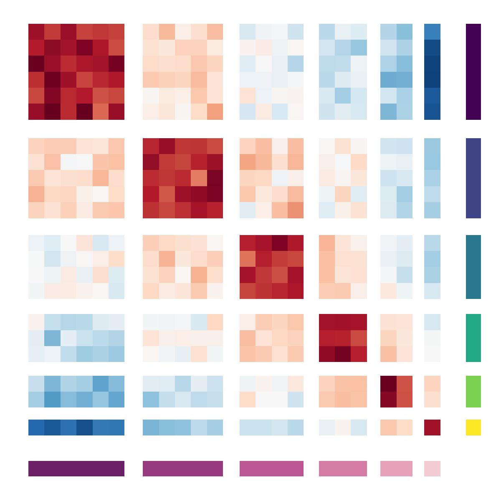
.footnote[ R Code, Tutorial on reordering ]
Speaker Notes
- Heatmaps can be very pretty…if you are good are reordering rows/columns and choosing color gradients.
- Here is an example “abstract aRt” generated from simulated data.
6. Friends Don’t Let Friends Make Heatmap without Checking Outliers
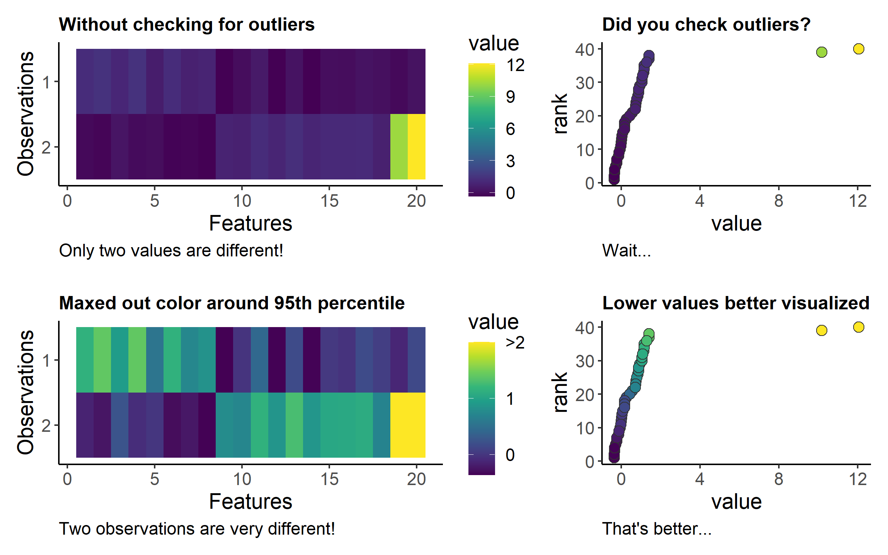
Speaker Notes
- Outliers in heatmap can really change how we perceive and interpret the visualization.
- This generalizes to all sort of visualizations that use colors to represent numeric data.
- Let me show you an example:
- In this example, I have 2 observations. For each observations, I measured 20 features.
- Without checking for outliers, it may appear that the 2 observations are overall similar, except at 2 features.
- However, after maxing out the color scale around 95th percentile of the data, it reveals that the two observations are distinct across all features.
7. Friends Don’t Let Friends Forget to Check Data Range at Each Factor Level
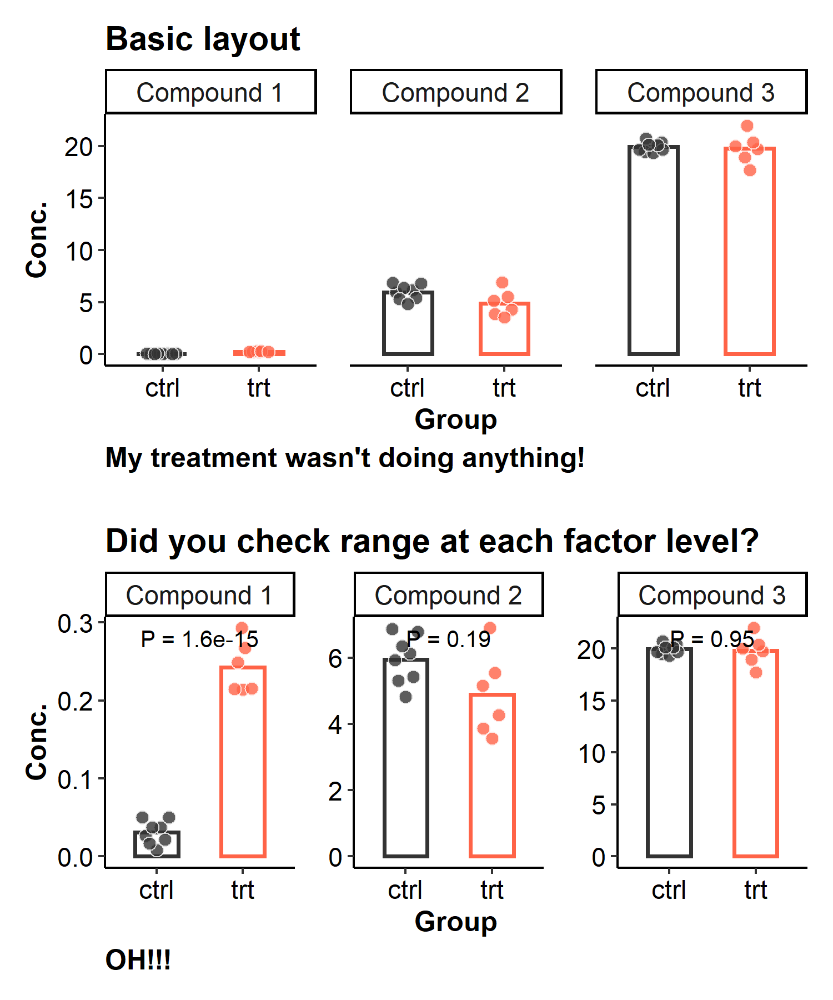
Speaker Notes
- This is a common issue that many of us have encountered.
- In a multifactor experiment, sometimes the range of the response variable changes widely between different factor levels.
- This hypothetical experiment measured 3 compounds across 2 groups (control vs. treatment).
- Without checking data range for each compound, you will likely have missed that the treatment had a strong effect on compound 1.
- This is because the concentration of compound 1 has a much narrower range than the other compounds in this experiment.
8. Friends Don’t Let Friends Make Network Graphs without Trying Different Layouts
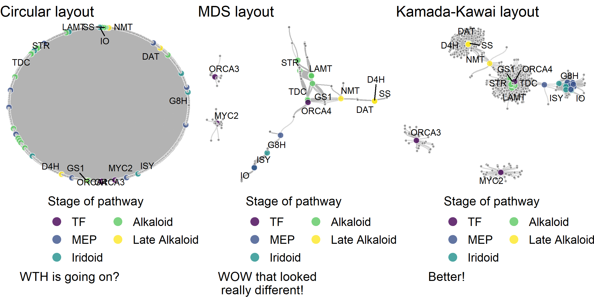
.footnote[Data from Li et al. 2022]
Speaker Notes
- Network graphs are common in scientific publications. They are super useful in presenting relationship data.
- However, the apparence (not the topology) of the network can make a huge difference in determing if a network graph is effective.
- Layouts can drastically change the appearance of networks, making them easier or harder to interpret.
- Here are 3 network graphs from the same data. They look very different from each other.
9. Friends Don’t Let Friends Confuse Position-based Visualizations with Length-based Visualizations
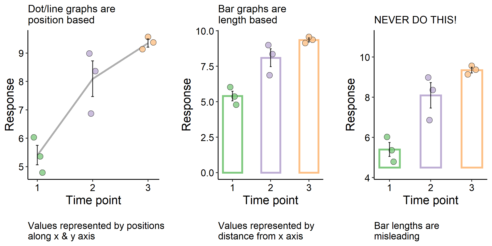
Speaker Notes
- This is always the elephant in the room and the essence of many misleading visualizations.
- In this example, I measured a response variable across 3 time points.
- Two of the following graphs are fine, but one of them is a data visualization crime. Can you see why?
- In dot and line plots, values are represented by positions along the x and y axis.
- The same idea applies to other position based visualizations, such as box plots.
- In bar plots, values are represented by the distance from the x axis, and thus the length of the bar.
- The 3rd graph is not 0-based, which makes the bar length at time point 2 about 3x longer than that at time point 1.
- In fact, the true difference in means is closer to 1.6x.
- I hope you can see how confusing length and position based visualizations can lead to misleading graphs.
Watch out for bar plots with broken axis
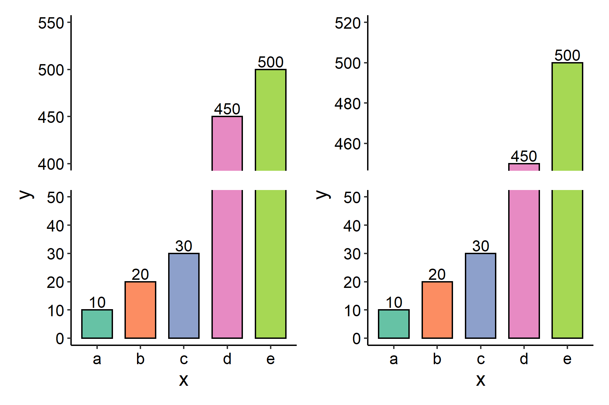
.footnote[Example R Code]
Speaker Notes
- Broken axis may be useful for depicting data across a wide range of numeric values.
- (Alternatively, log scaled axis can be used instead.)
- Broken axis are fine for position based graphics, because the data are represented by positions along the axis.
- However, we must be very careful with bar plots that have broken axis. Here is an example.
- In this example, two graphs (left vs. right) are showing the same data.
- However, by changing where the axis is broken, one can make certain bars looks longer or shorter.
- In this example, the length of bar “d” can look really different.
- The illusion of bar “d” being very short on the right graph boils down to bar plot being a length based graphics, not a position based graphics.
10. Friends Don’t Let Friends Make Pie Chart
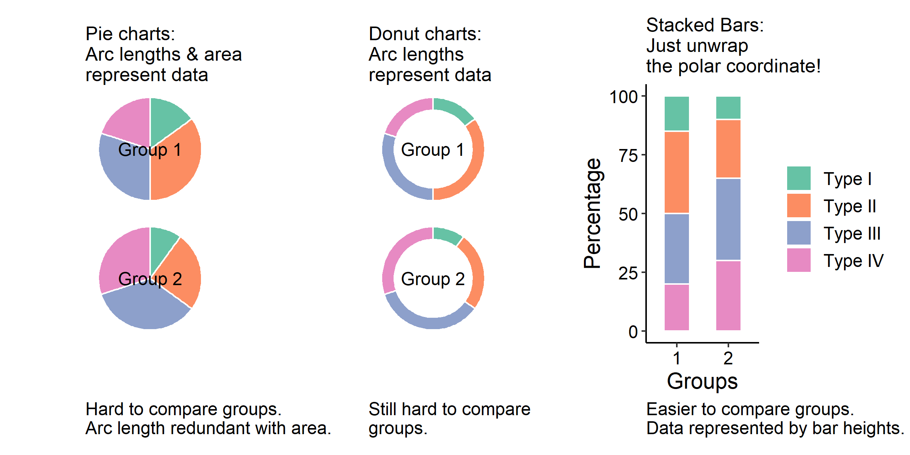
Speaker Notes
- Pie chart is a common type of visualization for fractional data, where fractions add up to 100%.
- This is achieved by dividing a circle into sectors, and the sectors add up to a full circle.
- Pie charts have been criticized, because human are much worse in reading angles and area than reading lengths.
- In this example, we have two groups, each contains 4 sub-categories.
- In classic pie charts, the angles (and thus arc lengths & sector area) represent the data.
- The problem is that it is very difficult to compare between groups.
- We can visually simplify the pie chart into donut charts, where the data are now represented by arc lengths.
- However, if we want to use lengths to represent the data, why don’t we just unwrap the donut and make stacked bars?
- In stacked bar graphs, bars are shown side-by-side and thus easier to compare across groups.
- Fun fact: the scripts underlying stacked bars are much simpler than those underlying the pie charts and donut charts.
- If you want to produce sub-optimal graph types with ggplot, you actually have to work extra hard.
11. Friends Don’t Let Friends Make Concentric Donuts
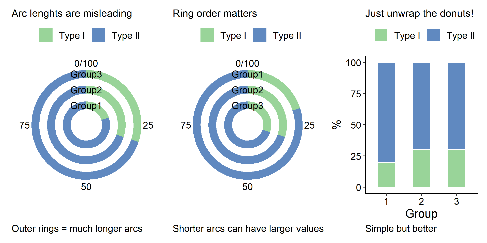
Speaker Notes
- In this example, we have 3 groups, each of which contains two sub-categories (Type I or Type II).
- In concentric donuts, you might be tempted to say the data are represented by the arc lengths, which is in fact inaccurate.
- The arc lengths on the outer rings are much longer than those in the inner rings.
- Group 2 and Group 3 have the same exact values, but the arc lengths of Group 3 are much longer.
- In fact the data are represented by the arc angles, which we are bad at reading.
- Since outer rings are longer, the ordering of the groups (which group goes to which ring) has a big impact on the impression of the plot.
- It can lead to the apparent paradox where larger values have shorter arcs.
- The better (and simpler!) alternative is just unwrap the donuts and make a good old stacked bar plot.
- BTW, this is also my main issue with circos plots and other circular plot layouts.
12. Friends Don’t Let Friends Use Red/Green and Rainbow color scales
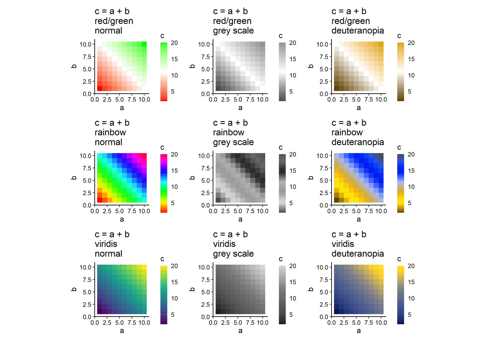
Speaker Notes
- Deuteranomaly is the most common type of red/green colorblindness, occurring in 1/16 male and 1/256 female.
- Any color scales that use shades of red and shades of green in the same time would be a problem for a person with red/green colorblindness (third column of the figure).
- In addition, red/green and rainbow do not preserve information well at all when printed on black/white (grey scale, second column in figure).
- Many scientific software still use red/green or rainbow as the default color scales, which drives me crazy.
- More “modern” color scales, such as viridis are both colorblind-friendly and grey scale-safe (third row of figure).
- And they look nice too.
13. Friends Don’t Let Friends Forget to Reorder Stacked Bar Plot
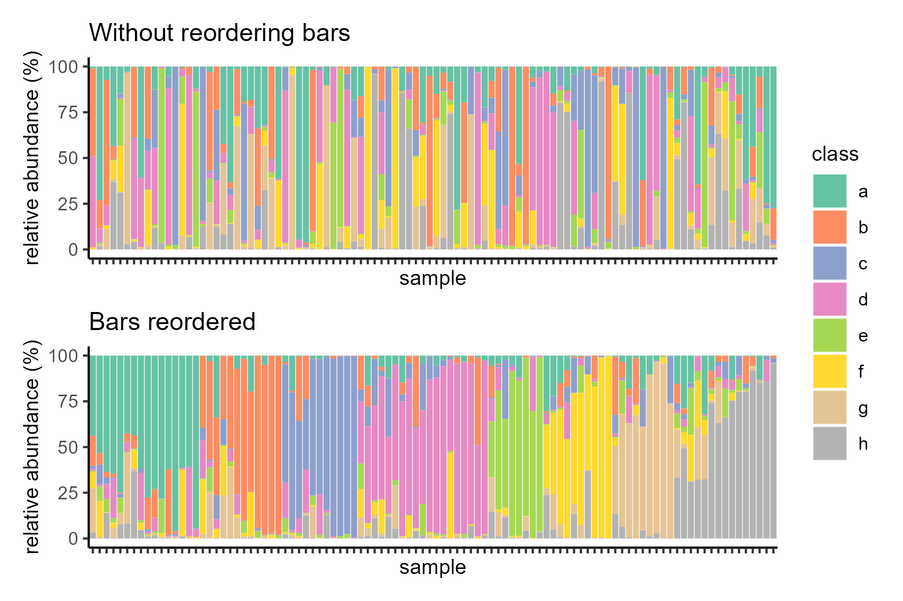
.footnote[Tutorial on optimising.]
Speaker Notes
- Stacked bar plots are useful for visualizing proportion data.
- Stacked bar plots are commonly used to visualize community structure or population structure or admixture analysis.
- This kind of visualization boils down to a collection of samples, where each sample contains multiple classes of members.
- However, when we have many samples and many classes, stacked bar plots need to be optimized to be effective.
- And by “optimize” I mean the grouping and ordering of samples.
- Here we have an example data with 100 samples and 8 classes of member.
- Due to the number of samples and classes, it is very hard to discern anything from this graph without optimizing the order of bars. What the heck am I looking at?
- After reordering the bars, wow, that really made a difference, don’t you think?
Thank you!
This material is the result of a collaborative work. Thanks to the Galaxy Training Network and all the contributors! Tutorial Content is licensed under
MIT.
Tutorial Content is licensed under
MIT.
References
- Weissgerber, T. L., N. M. Milic, S. J. Winham, and V. D. Garovic, 2015 Beyond Bar and Line Graphs: Time for a New Data Presentation Paradigm. PLOS Biology 13: e1002128. 10.1371/journal.pbio.1002128
- Matand, K., M. Shoemake, and C. Li, 2020 High frequency in vitro regeneration of adventitious shoots in daylilies (Hemerocallis sp) stem tissue using thidiazuron. BMC Plant Biology 20: 10.1186/s12870-020-2243-7
- Li, C., J. C. Wood, A. H. Vu, J. P. Hamilton, C. E. Rodriguez Lopez et al., 2022 Single-cell multi-omics enabled discovery of alkaloid biosynthetic pathway genes in the medical plant Catharanthus roseus. 10.1101/2022.07.04.498697